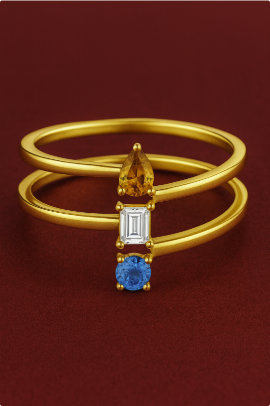
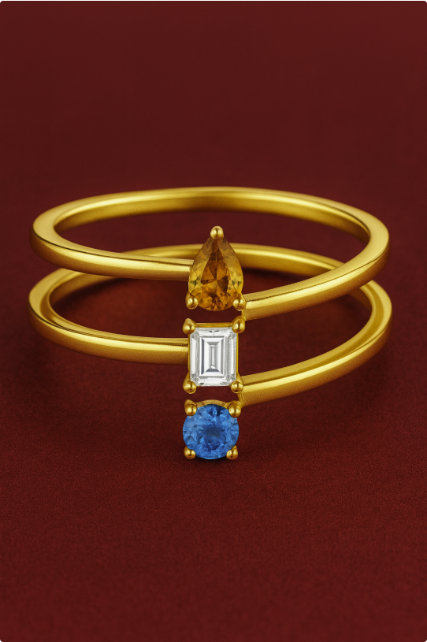
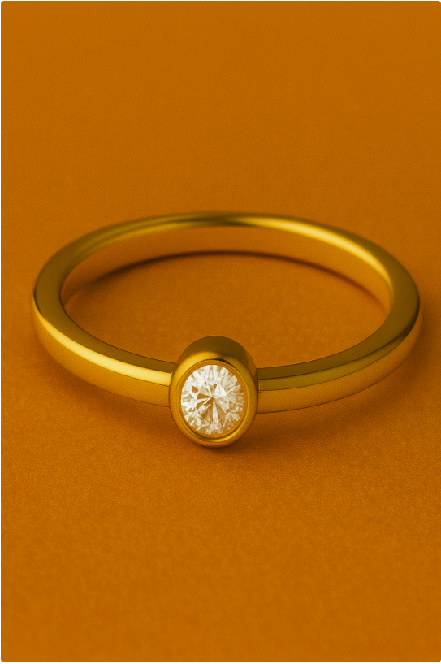
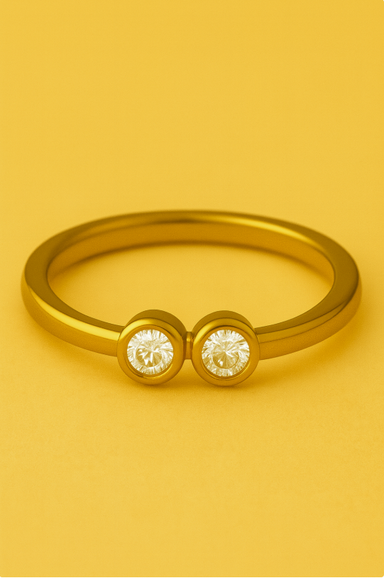
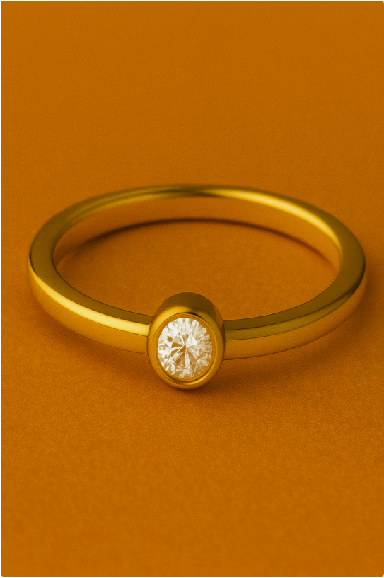
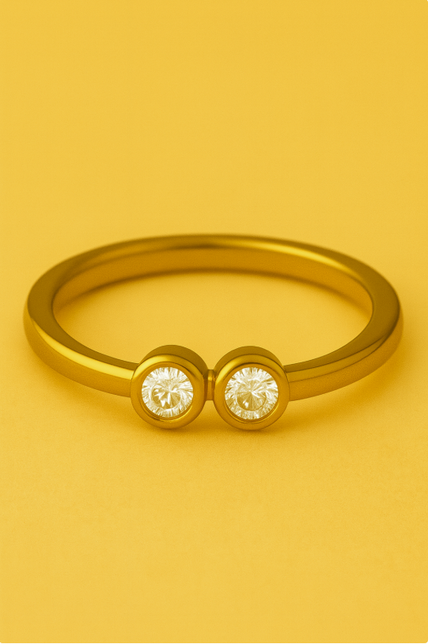

Concepts
At Kool Concepts, creativity never stops. Beyond what we manufacture today, our team is constantly developing fresh ideas and forward-thinking designs that anticipate where the market is headed. These potential concepts are born from our ongoing research, trend analysis, and in-house design innovation. They are explorations of what jewelry could look like tomorrow—blending artistry, cultural shifts, and commercial viability.
By sharing these concepts, we invite our clients to see what’s possible—to imagine new product lines, seasonal drops, or capsule collections that push boundaries while staying true to consumer demand. Whether it’s bold statement pieces, symbolic designs with deeper meaning, or playful motifs reimagined for modern wearers, these ideas showcase the breadth of what our team can envision and bring to life.
At Kool Concepts, potential isn’t just theoretical—it’s the starting point for the next big trend.
Modern Heirlooms
Your Story, In Stone
Heirlooms are often passed down — worn by mothers, grandmothers, and generations before.
But few collections ask a deeper question: Where do heirlooms begin?
Modern Heirlooms is a jewelry collection for the woman who wants to be the beginning.
This proposal was born from a new generation’s desire to celebrate their own defining moments —
not just with fashion, but with forever pieces that hold meaning.
From quiet victories to bold beginnings, this line transforms modern milestones into personal treasures.
It’s not about status.
Women today are choosing themselves — celebrating promotions, healing journeys, fresh starts, and personal growth.
Modern Heirlooms offers her a way to mark those moments — beautifully and meaningfully.
This is jewelry for a new kind of legacy: Not inherited — created.
Emotional Role: Honoring past, present, and future
Emotional Role: One stone for every year that changed you
Emotional Role: A cuff to commemorate major turning points
Emotional Role: Marking the steps of growth and resilience
In a world where personalization has become predictable, the Morse Code
Collection offers something rare: jewelry that speaks in secret.
Crafted using carefully placed round and baguette-cut diamonds to mimic
the dots and dashes of Morse code,each piece encodes initials, dates, or
words in a way that is deeply personal — and beautifully discreet.
These are not basic monograms.
They’re messages in stone.
Jewelry that speaks without saying a word.
Set in seamless patterns that spell out initials — only the wearer knows the
meaning.
It’s more than just initials—it becomes a love note, a mantra, or even a moment captured in code. With a minimalist, geometric design that carries deep emotional value, each piece is crafted to feel timeless yet personal. The style is gender-neutral and stackable, allowing wearers to layer their own stories and connections. Subtle yet powerful, the design holds hidden storytelling, making it not just jewelry, but a narrative you carry with you.
It’s about sentiment.
It’s not about waiting to inherit.
It’s about choosing to begin.
Why Now?
Key Elements Across the Collection:
Mother Stone Trilogy Rings
Design: Trio of contrasting diamonds
Memory Bar Necklace
Design: Slim horizontal bar pendant set with diamonds to symbolize growth over time
Milestone Bangle
Design: Minimalist gold band with inset diamonds at key intervals, each marking a personal achievement
Journey Chain Bracelet
Design: Linked chain with alternating textures (polished and diamond studded) to symbolize highs and lows, trials and triumphs
The Cipher Collection
Delicate language. Loud meaning
Concept Highlights
Why It's Special
Key Elements Across the Collection:
 



 


